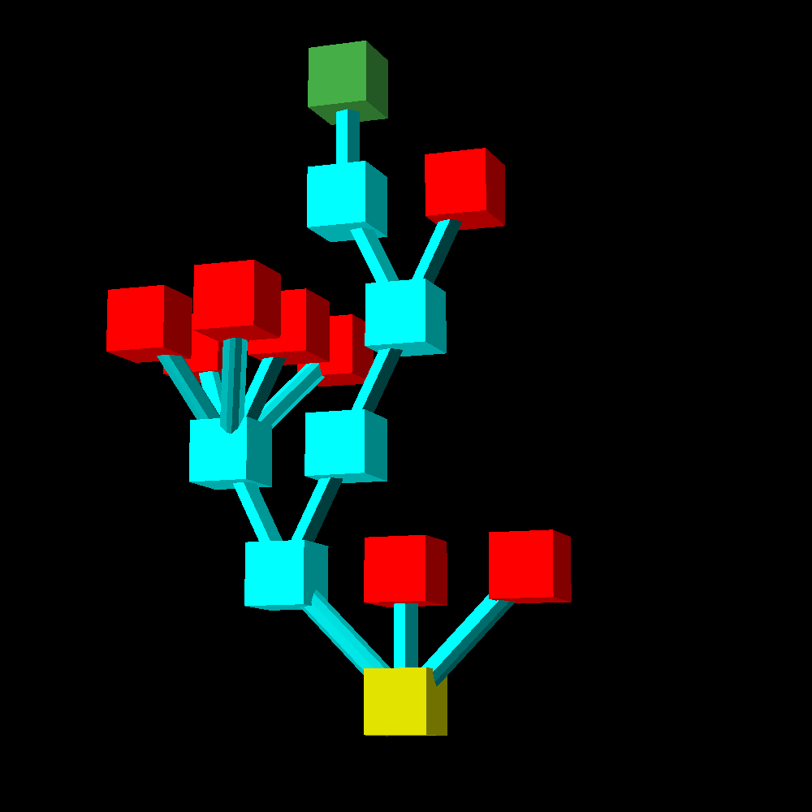

This page is work in progress
link to this page
Amorphic programming

Amorphic programing is a method of programming where majority of the program that actually executes the intended task is created at the time of execution by the original program.
It is sometimes considered a method of compression.
General idea
Programs which modify themselves during execution can perform the functions of much larger programs that already include all of the internal logic from the beginning without actually incurring the much larger cost of storage.
This can be thought of as most of the program being stored in the abstract/hypothetical, much like writing an equation instead of storing a table of values.
Cleverly made amorphic programs could also adapt to changes not precisely planned out in advance, such as adapting to a new input format of data, or optimizing themselves for a new processor architecture which had not yet existed at the time the program was written.
Many classical programs include some parts or situations where a program modifies itself as a part of its execution, and by convention it is said that a program is only truly amorphic if it can change every part of itself such that none of the original code remains and still complete its intended task.
Benefits
Potentially astronomical savings in terms of storage/memory space required to store/run the program.
An amorphic program may be able to optimize itself to the problem it is currently dealing with and go back to its more general form afterwards, then optimize itself to a different problem, thus achieving near-optimal efficiency in multiple cases whereas a classical program would have needed separate implementations optimized to each separate problem.
Drawbacks
Debugging amorphic programs requires extrapolation of what the program will evolve into as it executes and self-modifies, which may produce a combinatorial explosion since in most cases the self-modification of an amorphic program depends on the scenario.
An amorphic program that is sufficiently unconstrained will produce a tree of possible next programs that quickly branches into a number of possibilities completely unfeasible to debug properly.
A program that rewrites itself repeatedly could accumulate errors, and in a particular case where an error is made that affects its ability to modify itself correctly it could lead to becoming increasingly nonfunctional the longer it runs.
In the worst case an amorphic program might commit just the right combination of errors in self-modification that it spontaneously mutates into malware.